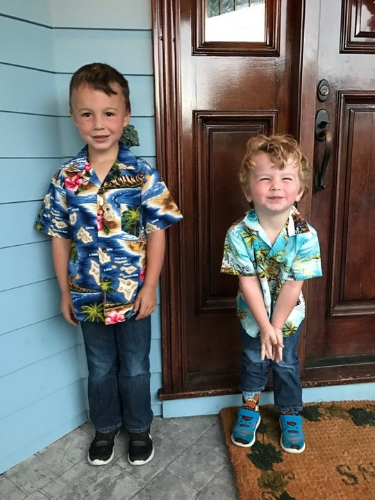

Dexter + Oliver
Us, forever.
A little corner of dexterbain.com for the photos that feel like a whole story: big trips, tiny jokes, serious faces, proud smiles, and all the ordinary minutes that somehow become the best ones.
Built for the two people who can turn a meal, a boat ride, or a day outside into a memory worth keeping.

The Timeline
Little-kid classics, big trips, proud smiles, weird faces, and newer photos where both of you somehow look grown up already.
Oliver, we have had so much fun over the course of our lives. Remember when I went on your first date with you? Or when I copied your YouTube channel intro almost word for word? It does not matter how old we get, I will still beat you in 2K.
From your bro, Dex.